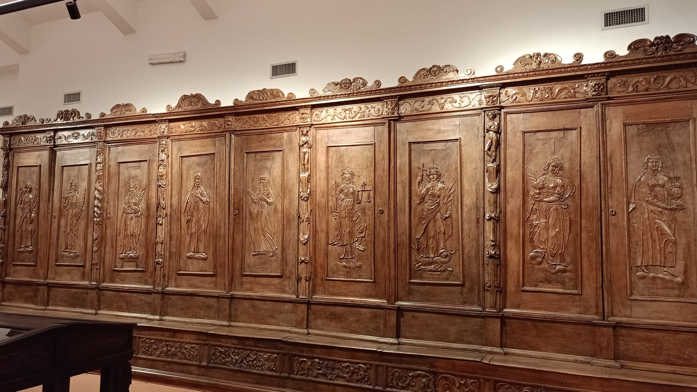
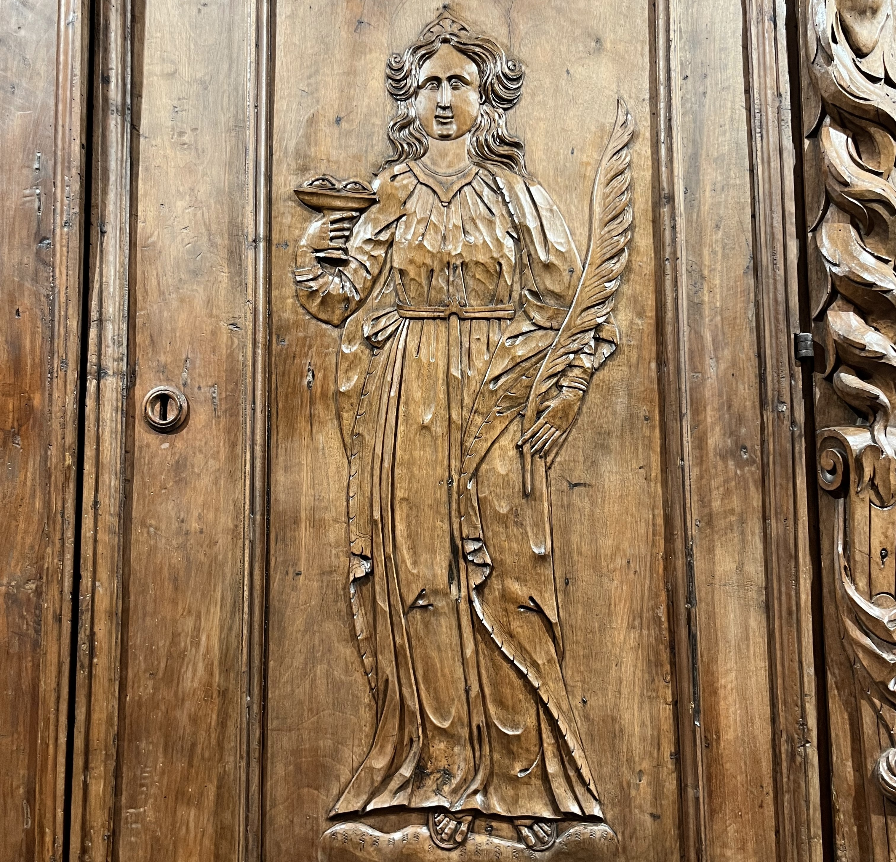
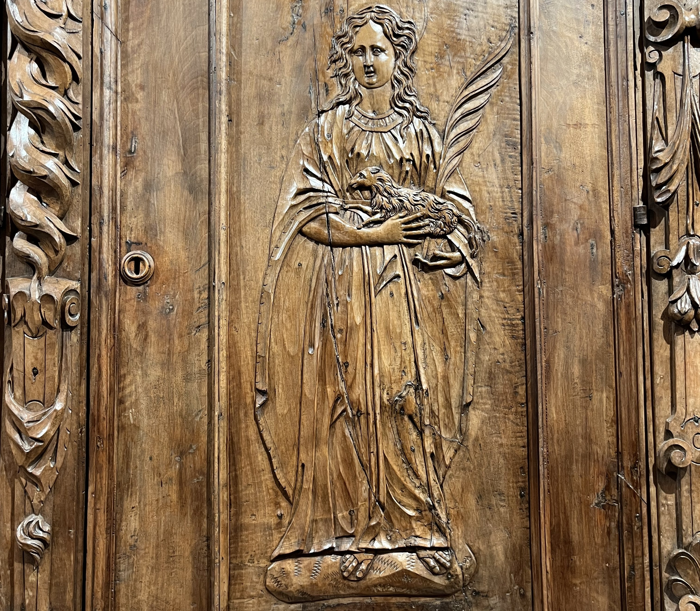
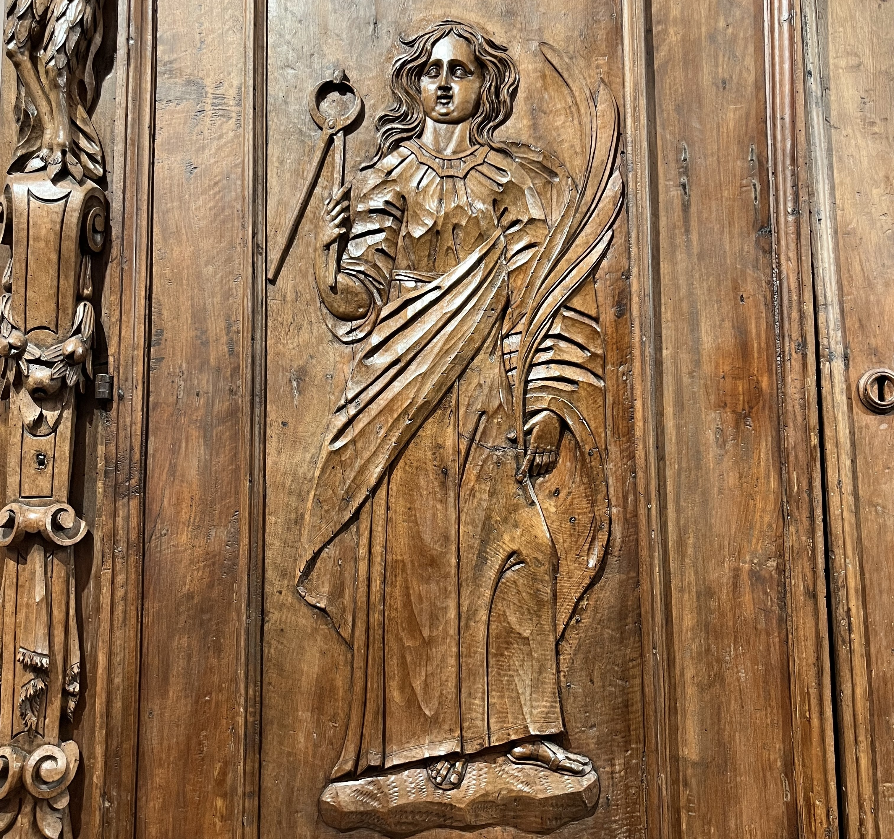
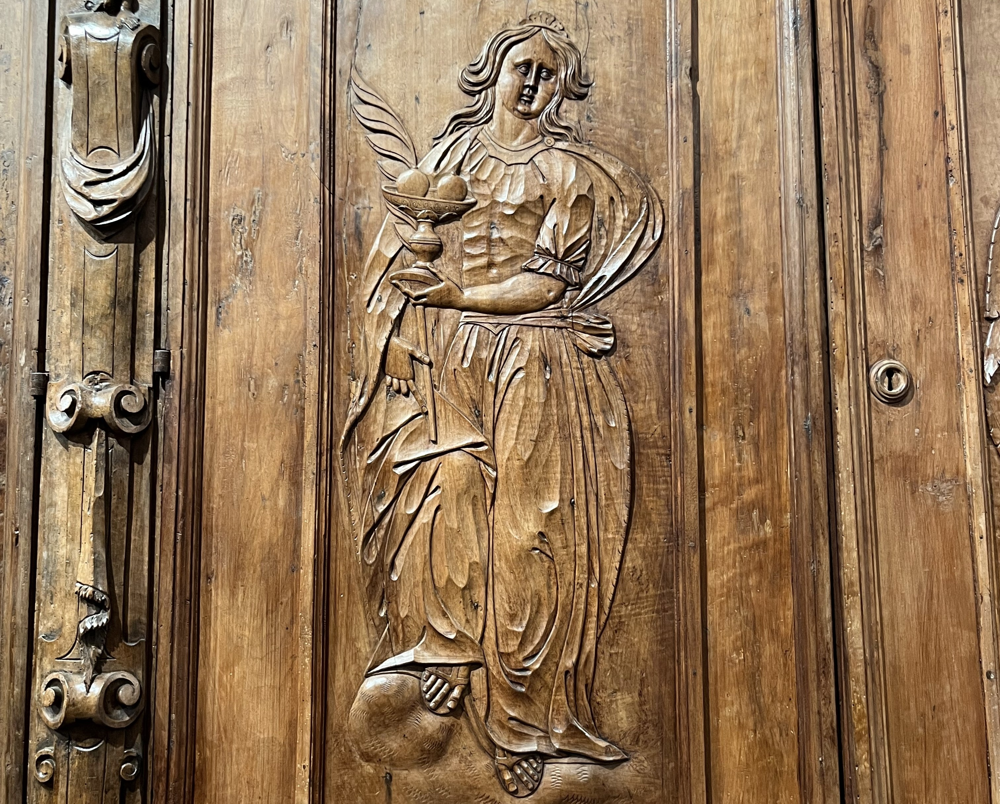
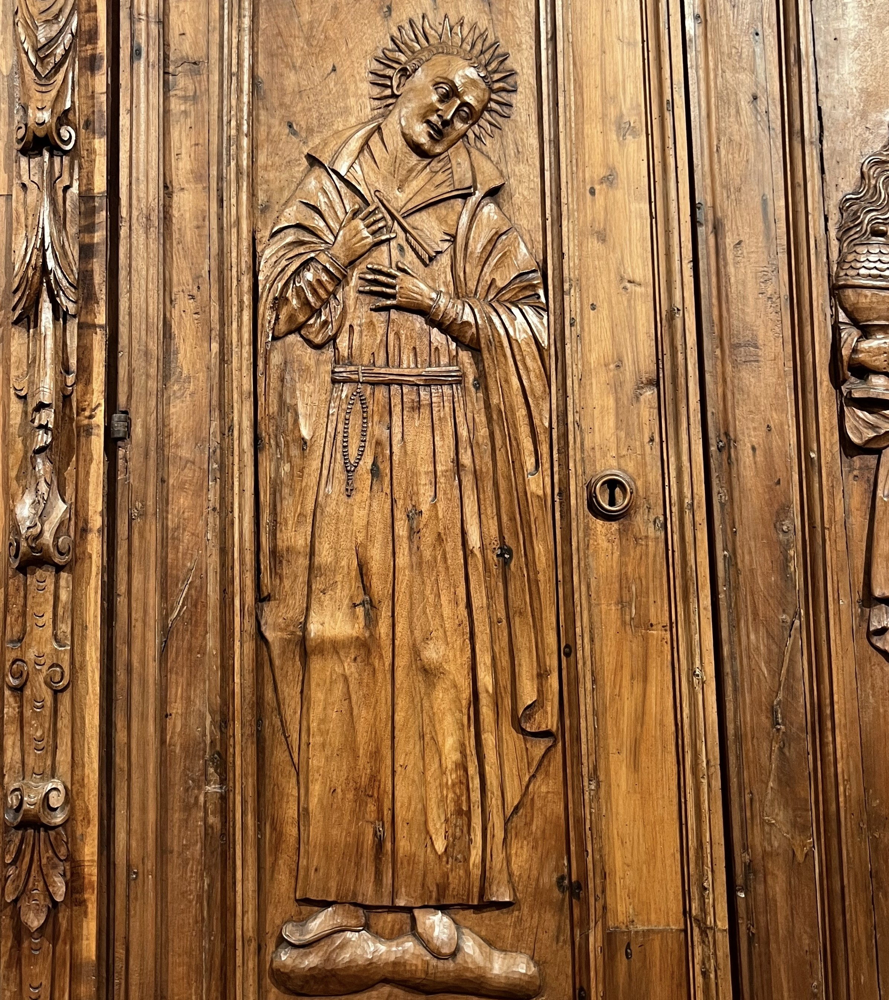
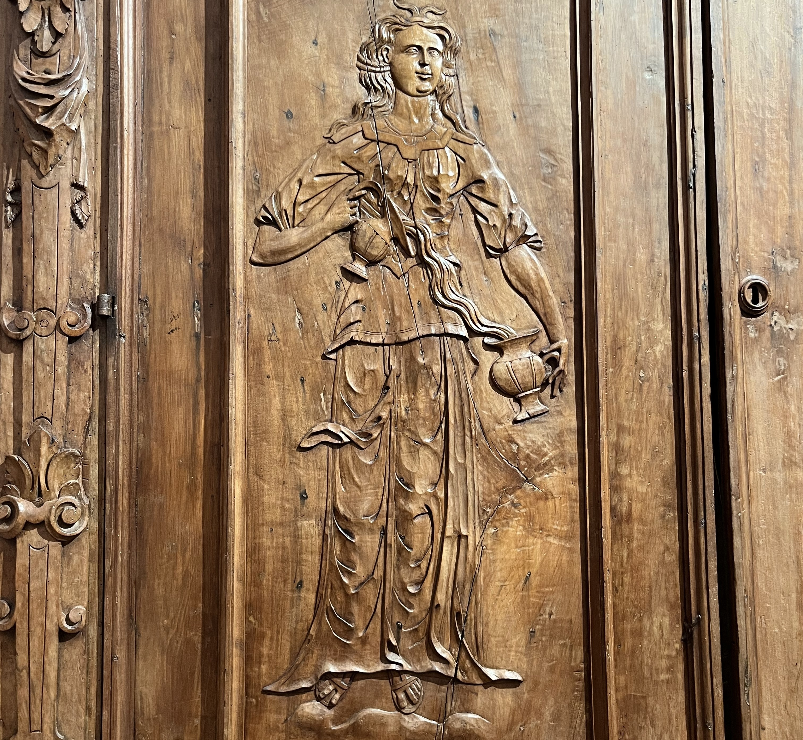

Arte e Martirio
Negli armadi espositivi si trovano figure sacre e simboliche, tra cui sante legate a protezioni specifiche o al martirio, e virtù morali come Giustizia, Temperanza, Prudenza e Fortezza. Le sante sono spesso rappresentate con attributi che ne richiamano la vita e la morte.
Tra le statue compare anche un missionario gesuita, il Beato Rodolfo, figlio dei duchi della città, raffigurato con raggi luminosi prima della sua beatificazione.
Santa Lucia, vissuta nel IV secolo a Siracusa, era una giovane cristiana famosa per la sua fede. Subì il martirio durante le persecuzioni di Diocleziano, simboleggiando la totale dedizione a Dio. Il suo nome, che significa “luce”, ne fa la protettrice della vista e degli occhi.
Nelle rappresentazioni iconografiche è raffigurata con candela accesa e dal 1600 con occhi su un piatto, simboli della luce spirituale e della protezione della vista. La sua festa si celebra il 13 dicembre, con devozione in Sicilia e nei Paesi del Nord Europa.

Sant’Agnese è una giovane martire cristiana di Roma, vissuta nel III secolo d.C. Fin da piccola consacrò la sua vita a Dio, rifiutando matrimonio e compromessi con la società pagana dell’epoca. Durante le persecuzioni dell’imperatore Diocleziano, fu arrestata e martirizzata a soli 12 o 13 anni per la sua fede.
È venerata come simbolo di purezza e innocenza, spesso raffigurata nell’arte con un agnello e la palma del martirio. La sua memoria liturgica cade il 21 gennaio, giorno in cui la Chiesa celebra la sua dedizione e il suo esempio di coraggio. Sant’Agnese è anche protettrice dei giovani e delle fanciulle, e la sua storia continua a ispirare fedeli e artisti nel corso dei secoli.

Santa Apollonia fu una martire cristiana di Alessandria d’Egitto nel III secolo d.C. Durante le persecuzioni contro i cristiani, subì torture atroci, tra cui lo strappo dei denti, e preferì il martirio piuttosto che rinnegare la fede.
È venerata come simbolo di coraggio e fedeltà a Dio, spesso raffigurata con una pinza o un dente e la palma del martirio. La sua memoria liturgica cade il 9 febbraio e la sua protezione è invocata contro le malattie dei denti e della bocca.
Santa Apollonia è anche considerata un modello di forza interiore di fronte alla sofferenza, e la sua figura ha ispirato numerose opere d’arte e devozioni popolari in Europa e nel Nord Africa.

Sant’Agata fu una martire cristiana di Catania nel III secolo d.C. Fin da giovane consacrò la sua vita a Dio, rifiutando il matrimonio e le pressioni di un funzionario romano, e per questo subì torture atroci, tra cui lo strappo delle mammelle.
È venerata come simbolo di coraggio, purezza e fedeltà a Dio, spesso raffigurata con due mammelle su un piatto e la palma del martirio. La sua memoria liturgica cade il 5 febbraio e la sua protezione è invocata dalle donne, dalle ostetriche e da chi soffre di malattie al seno. Sant’Agata è anche patrona della città di Catania, e la sua vita continua a ispirare fede, devozione e opere d’arte sacra in tutta Italia e nel mondo.

Beato Rodolfo Acquaviva (1550‑1583) fu un gesuita e missionario italiano nato ad Atri dalla famiglia ducale. Entrò nella Compagnia di Gesù nel 1568 e si formò a Roma in filosofia e teologia. Dopo l’ordinazione sacerdotale, partì per l’India, dove inizialmente insegnò a Goa e poi fu inviato alla corte dell’imperatore Akbar per promuovere il dialogo religioso e diffondere il cristianesimo.
Nonostante gli sforzi, la missione incontrò grandi difficoltà e Rodolfo decise di concentrarsi sulle comunità locali nella regione di Salsette. Nel luglio del 1583, durante una rivolta locale contro l’imposizione della croce e la presenza dei missionari, Rodolfo e quattro confratelli furono brutalmente uccisi mentre pregavano, offrendo la vita per la loro fede.
Per il suo martirio e la dedizione missionaria, fu beatificato da Papa Leone XIII nel 1893, e la sua memoria è celebrata il 15 luglio. È ricordato come modello di coraggio, fedeltà e impegno missionario.

La giustizia è la virtù che guida l’uomo a dare a ciascuno ciò che gli spetta, rispettando i diritti, i doveri e la dignità altrui. Non si limita al rispetto delle leggi, ma richiede equità, onestà e integrità nelle azioni quotidiane.
Si manifesta a livello personale, sociale e politico, regolando i rapporti tra le persone secondo il bene comune. Filosofi come Aristotele e teologi come San Tommaso d’Aquino l’hanno definita una virtù fondamentale per la vita morale.
Praticare la giustizia significa agire con imparzialità, responsabilità e rettitudine, anche di fronte a sacrifici o pressioni esterne. È indispensabile per costruire rapporti umani equilibrati, una società civile armoniosa e una vita personale virtuosa.
La temperanza è la virtù che permette di controllare i desideri e le passioni, evitando eccessi e carenze. Aiuta a mantenere equilibrio nella vita quotidiana, moderando piaceri, emozioni e bisogni materiali in armonia con la ragione e la morale.
Non significa reprimere i desideri, ma guidarli verso il bene e il giusto, evitando indulgenze dannose o privazioni eccessive. Filosofi e teologi, come Aristotele e San Tommaso d’Aquino, l’hanno definita fondamentale per una vita virtuosa, perché consente di agire con equilibrio, rettitudine e responsabilità.
La temperanza favorisce l’autocontrollo, sostiene le altre virtù cardinali e promuove la serenità interiore, rendendo possibile una convivenza civile equilibrata e armoniosa.
